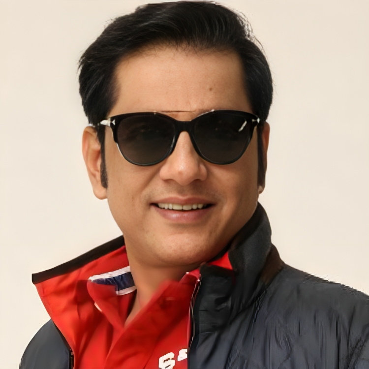
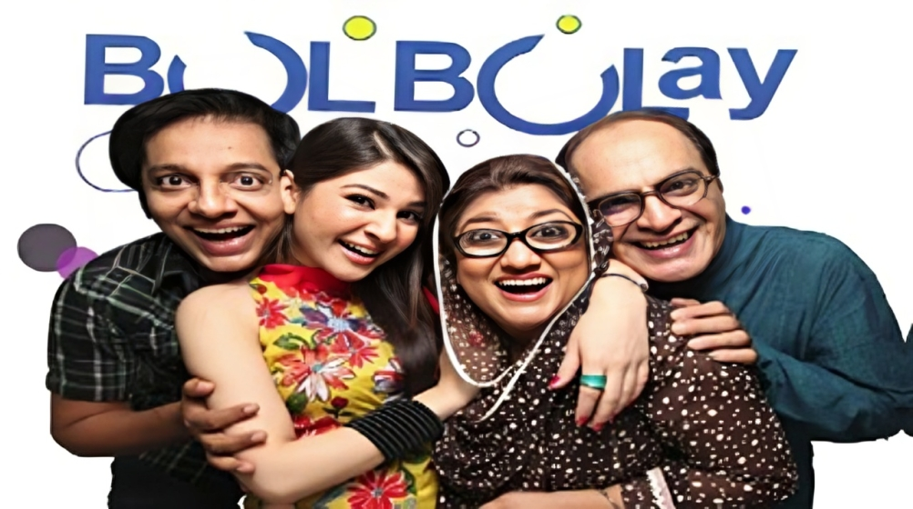

A life in stories
Nabeel
Zafar.
A familiar face.
A lifetime of making us smile.

Actor✦Director✦Producer✦MIF Productions
The story continues ↓Some faces
feel like home.
For many, he is simply Nabeel — a familiar presence, a perfectly timed line, a reason to gather around the television.
Nabeel Zafar’s work spans acting, directing and production. From the drama of Dhuaan to the everyday mischief of Bulbulay, his story is woven into Pakistani television.
Behind the character is a storyteller. Beyond the screen, a life filled with people, places and moments worth keeping.

The Bulbulay years
One family.
So many memories.
Nabeel, Momo, Khoobsurat and Mehmood Sahib. Four unmistakable characters, and a world of beautifully chaotic everyday adventures.
As an actor and producer, Nabeel has helped make Bulbulay a lasting part of Pakistan’s television story.
Step into the world of Bulbulay ↗The dramatic beginnings
The 1994 drama Dhuaan is an early chapter in a career that would span very different kinds of storytelling.
A place in the living room
In Bulbulay, his comic persona became a familiar companion to audiences and a defining part of his work.
The storyteller behind it all
Acting, direction and production come together in a career devoted to bringing stories to the screen.
Life between
the scenes.
On set. On the road. In good company.
A few frames from a
life fully lived.